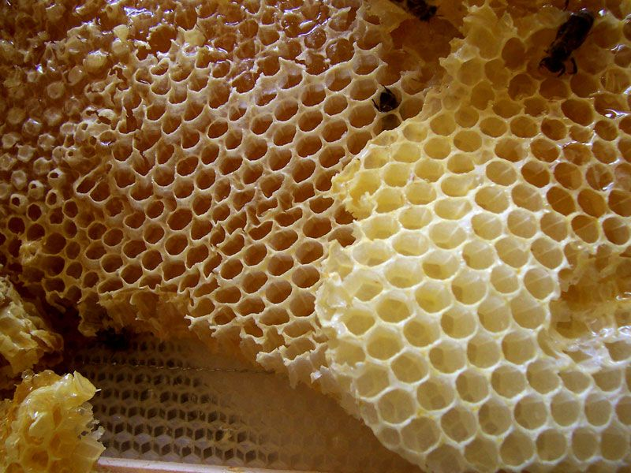
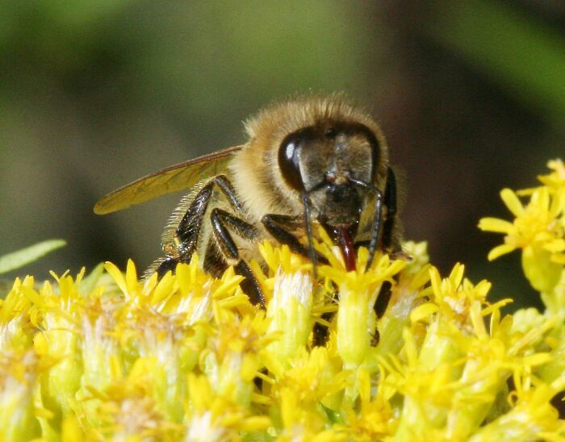

1Binlerce yıllık bal
Çoğu yiyecek birkaç gün, birkaç hafta ya da en fazla birkaç ay içinde bozulur. Konserve ve kurutulmuş gıdalar bile bir noktada son kullanma tarihine ulaşır. Bal ise bu kuralın en çarpıcı istisnasıdır.
Arkeologlar antik Mısır mezarlarında binlerce yıllık bal kapları bulmuş ve bu balların hâlâ yenebilir durumda olduğunu bildirmiştir. Mısırlılar balı hem yiyecek hem ilaç olarak kullanıyor, ölülerin öbür dünyada ihtiyaç duyacağına inandıkları için mezarlara koyuyordu.
2Birinci sebep: Neredeyse hiç su yok
Bakteri ve küf gibi mikroplar çoğalmak için suya ihtiyaç duyar. Balın içindeki su oranı ise çok düşüktür. Bal aslında suyun içinde çözünmüş aşırı yoğun bir şeker karışımıdır.
Bu yoğunluk mikroplar için ölümcüldür. Bir bakteri bala düştüğünde, balın yoğun şekeri bakterinin içindeki suyu dışarı çeker. Buna ozmoz denir. Bakteri kuruyup ölür. Reçel ve tuzlu yiyeceklerin uzun dayanmasının arkasında da aynı ilke vardır.

3İkinci sebep: Asitlik
Bal tatlı olsa da aslında oldukça asidiktir. pH değeri genellikle 3,2 ile 4,5 arasındadır. Bu, birçok meyve suyuna yakın bir asitliktir. Mikropların büyük çoğunluğu böyle asidik bir ortamda çoğalamaz.

4Üçüncü sebep: Arıların doğal dezenfektanı
Arılar çiçeklerden topladıkları nektarı bala dönüştürürken içine glukoz oksidaz adlı bir enzim ekler. Bu enzim, bal sulandırıldığında şekerle tepkimeye girerek az miktarda hidrojen peroksit oluşturur. Hidrojen peroksit, yaralara sürülen oksijenli suyun etken maddesidir ve mikropları öldürür.
Arılar ayrıca kanatlarını çırparak nektarın suyunu buharlaştırır. Bal yeterince koyulaştığında gözeneklerin üstünü balmumuyla kapatırlar. Böylece bal hava ve nemle temas etmeden saklanır.
5Bal neden bazen bozulur?
Bal havadaki nemi emebilir. Kavanozun kapağı açık kalırsa ya da içine ıslak bir kaşık girerse balın su oranı artar. Su oranı yükselince bal mayalanmaya başlayabilir ve ekşi bir koku oluşur.
Balın kristalleşmesi, yani şekerlenmesi ise bozulma değildir. Bu, glukozun kristaller oluşturmasıyla olan doğal bir süreçtir. Kavanozu ılık suya koyarak balı yeniden akışkan hâle getirebilirsiniz.
💡 Biliyor muydun?
- Bal tarih boyunca yaralara sürülerek de kullanıldı. Bugün bazı tıbbi yara pansumanlarında özel olarak işlenmiş bal kullanılıyor.
- Bir arı ömrü boyunca bir çay kaşığının yaklaşık on ikide biri kadar bal üretir.
- Bir yaşından küçük bebeklere bal verilmez, çünkü balda nadiren bebekler için tehlikeli bakteri sporları bulunabilir.
✅ Kaynaklar
📷 Görseller
- Kapak: Scott Bauer, USDA ARS · Public domain · Wikimedia Commons
- Bal peteği: Arılar balı balmumundan yaptıkları bu altıgen gözlerde saklar ve üstünü mumla kapatır: Merdal at Turkish Wikipedia · CC BY-SA 3.0 · Wikimedia Commons
- Nektar toplayan bir bal arısı: Bilinmeyen yazar · CC BY 2.5 · Wikimedia Commons